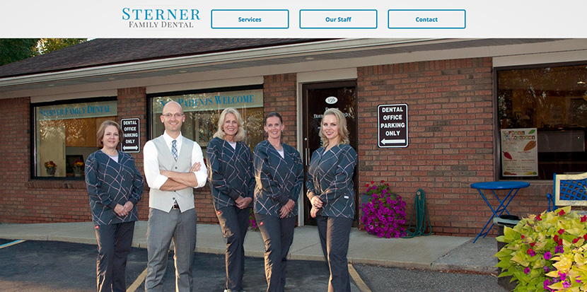

Web Projects
Jetti Systems

Jetti Systems is a family of web apps that helps restaurants connect with their customers. Restaurant patrons connect to the app through ‘tag stations’ during their dining experience and check in to get points towards rewards. Restaurants control their program through an admin panel where the can adjust rewards, update point values, or view there member’s history.
Jetti Rewards is currently live in several restaurants.
Related Resources
Proof of Concept (Mobile) User Interface v.1 Live Mockup (Mobile) User Interface v.2 Wireframes User Interface v.2 Mockups User Interface v.2 Live Mockup (Mobile) Client Admin Live Mockup (Desktop) User Facing Website Client Facing Website Promotional Trifold (inside) PDF (4mb) Promotional Trifold (outside) PDF (4mb)
{kind=link}
{kind=link}
Atlas Digital Menus
The Atlas Digital Menu was a web application that was intended to replace printed paper menus in bars and restaurants. I was responsible for all UX, Visual Design and Front End responsibilities as well as development and oversight of all online marketing materials. I also served as the project manager for the Back End team.
While the demo version of the menu was very well received, the acquisition and cost of the physical hardware was too much for our target customer. This was mothballed in Q1 of 2015.
Related Resources
Version 01 (adjust screen to a tablet size)
Version 02 (adjust screen to a tablet size)
Sterner Family Dental
When Dr. Sterner opened his new office in Whitmore Lake, MI, I was hired to develop a new website that would introduce his practice to the community. My goals for this project were to develop a user-friendly experience for his patients and create a site that would perform well in search rankings. I am happy to say the site is ranking number one for their targeted keywords.
Related Resources
SFD's Website (Responsive)
Necto.com
In late 2013 I was brought on to update the website for the Necto Nightclub, located in Ann Arbor, MI. Their website was inundated with significant issues resulting in poor load times, limited SEO and a dangerously low amount of on page content. Necto's customer base is mostly generated from local colleges and the 18-34 demographic, a young tech savvy crowd. It was important to modernize the site to meet customer expectations in 2014 and beyond.
After conducting a current site analysis, the staff and I worked together to build a meaningful, targeted and responsive experience for their visitors. The management has referred to the performance of the new site as “highly impressive”. I am happy continue to serve as the manager for the site and provide content strategy consultation for social and other web channels.
Bringing on CCWD has brought a hugely positive change for our website. We completely revamped and rebuilt our site to maximize our visibility and our marketing outreach. Working with Chris (from CCWD) has been a very easy process and we are quite pleased with the results." - Bryan Kostoff / Necto Nightclub
In May 2017, we implemented a complete redesign of the entire website. The redesign was informed by analytic data generated over the past 3 years.
The decision was also made to go framework-free to improve speed and to allow for more customized event and visitor tracking.
In the first month, the new site saw:
- 30% increase in pageviews
- 26% increase in pages per session
- 25% increase in session duration
- 19% drop in bounce rate
Mobile traffic visits saw a 37% increase in pageviews and a 33% increase in pages per session.
We are now performing detailed tracking over all marketing channels and have been able to make data-driven decisions that are adding revenue.
Related Resources
Necto Nightclub - Website Review (PDF)
Necto Nightclub's Website (Responsive)
BooberTours.com
When Kevin Spangler of the Ann Arbor based pedicab company Boober Tours realized that he needed to take his promotional efforts to the next level he knew that he need to expand beyond simply doing social media posts and street level marketing.
Boober Tours has big goals of expanding beyond simply providing a pedicab taxi service. When CCWD sat down with the Boober team, we quickly understood that, if Boober was to continue to grow, they needed to expand their services and reach.
During the brainstorming session we identified three niche markets that Boober wanted to target: wedding transportation, event transportation, and pedicab pub-crawls. Boober also wanted to tell their unique origin story and communicate its mission of giving back to the community.
The end result was a fully responsive marketing website that promoted these new services beyond the Ann Arbor region.
CCWD provided all design, development, and copywriting for this project.
Spring215.com

This is the public facing site for the now defunct SPRING Creative Group design collective based within the SPARK East business incubator in Ypsilanti, MI.
My goal for this project was to create a fully responsive site that utilized a stripped-down design aesthetic that guided the user to the most critical content.
Wipperzeit abandoned
Wipperzeit is an abandoned side project that was intended to be a place where indie video game developers could pitch concepts and ideas and get feedback from the community. This project was in development as Steam launched their very similar Greenlight community. Included here are some early static and HTML mockups.
Aromaholic.net

The latest version of Aromaholic.net, a hand made soap and body care company based in Detroit, Michigan, was my first experiment with using both ‘flat’ design principals as well as the Skeleton front-end frame work.
I attempted to achieve the company’s goal of simplifying the sites’ structure and guiding users to the company's Etsy store which serves as their primary point of sale.
Vantagepointvisual.com

When the Ann Arbor based video production company Vantage Point Visual realized that their current website was not generating the kind of results they had hoped for, they asked me to review their site’s content, layout, and code to see where improvements could be made.
After inspecting the site, I identified several areas in need of improvement including on and off-site SEO issues, poorly optimized HTML code, and a lack of fresh content. After implementing small improvements to the sites layout and on-site SEO elements, I helped them develop a strategy for increasing their online footprint and search engine results page rankings that included aggressive blogging and industry out-reach campaigns.
Design Projects
Clique Up

Clique Up is a social networking game that is played in real world settings that encourages players to connect with each other and developer meaningful friendships.
I designed this game after becoming increasingly disappointed with the quality of online relationships I saw my friends 'developing' in their various social networks.
Clique Up is currently in active development.
Resources
Clique-Up Overview Slideshow (PowerPoint) Welcome Screens (Mockup) Profile Setup (Mockup) Profile and Activity Screens (Mockup) Location Interaction Screens (Mockup) Quest Screens (Mockup)
{kind=link}
{kind=link}
{kind=link}
{kind=link}
{kind=link}
AccPrac
AccPrac is a design concept that helps users learn to speak in a new accent. The app uses your native accent to build a customized practice schedule for a wide variety of accents around the world. The user can follow a guided learning experience or participate in free practice sessions.
Resources
AccPrac Overview Slideshow (PowerPoint)
User Experience Documents
Below is a list of user experience related documents, wireframes and reports.
Documents
- Behavior Modification:
JATC-669 - Behavior Data Analysis:
JATC-669 - Card Sort:
Ann Arbor SPARK - Expert Review:
Elektricity Nightclub - Competitive Analysis:
Ann Arbor Web Hosting - Site Deconstruction:
Washtenaw Technical Middle College - Interface Redesign:
Villageofdexter.org - User Testing:
Etsy.com - Expert Review:
The City of Ann Arbor - Task Analysis:
LUSH.com - Accessibility Inspection:
JustAudioBooks.com
SEO and Web Marketing
Below is a list of SEO and Web Marketing reports.